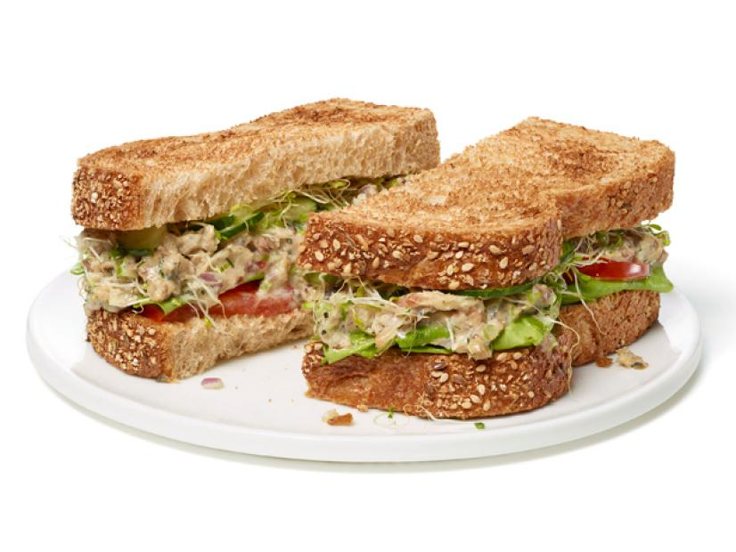

Sardine Salad

This is a different spin on a popular tuna salad recipe; however this recipe uses a much healthier fish -
sardines! This recipe will certainly have a stronger fish flavor than your typical tuna salad, however it is
quite delicious especially on your favorite toasted bread!
Ingredients
- Two 3.75-ounce cans oil-packed skinless, boneless sardines, drained
- 2 stalks celery, finely chopped
- 1/2 small red onion, finely chopped
- 1/4 cup low-fat mayonnaise
- 1 tablespoon chopped fresh dill
- 1 tablespoon fresh lemon juice
- 1 teaspoon grated lemon zest
- 1 teaspoon Dijon mustard
- Kosher salt and freshly ground pepper
Directions
- Combine the sardines, celery, red onion, mayonnaise, dill, lemon juice, lemon zest, mustard, 1/4 teaspoon
salt, and pepper to taste in a large bowl. Mash well with a fork.